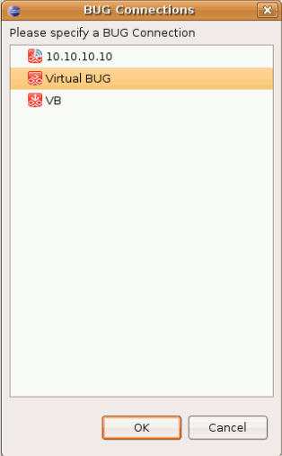

Send an Application to BUG
To send an application created in the Dragonfly SDK to BUG:
- Turn your BUG on and connect it to your network. If you are having trouble, please see http://buglabs.net/start
- Right click on the application in the Project Explorer pane. Select Send to BUG

- Next, one of the following cases will apply, depending on whether you have one or more BUGs.
- If you have only one BUG connection listed in My BUGs view, the application will be now be available on it. Open the My BUGs view in Eclipse to check it out.
Mulitple BUG Connections in My BUGs
Select one from the BUG Connections pop up window and click OK. The application is now available on the BUG of your choice.

Need more examples?